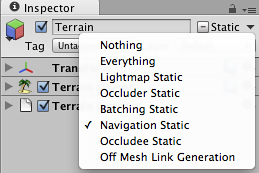

Navmesh and Pathfinding (Pro only)
A navigation mesh (also known as the Navmesh) is a simplified representation of world geometry, which gameplay agents use to navigate the world. Typically an agent has a goal, or a destination, to which it is trying to find a path, and then navigate to that goal along the path. This process is called pathfinding. Note that Navmesh generation (or baking) is done by game developers inside the editor, while the pathfinding is done by agents at runtime based on that Navmesh.
In the complex world of games, there can be many agents, dynamic obstacles, and constantly changing accessibility levels for different areas in the world. Agents need to react dynamically to those changes. An agent's pathfinding task can be interrupted by or affected by things like collision avoidance with other characters, changing characteristics of the terrain, physical obstacles (such as closing doors), and an update to the actual destination.
Here is a simple example of how to set up a navmesh, and an agent that will do pathfinding on it:
- Create some geometry in the level, for example a Plane or a Terrain.
- In the Inspector Window's right hand corner click on and make sure that this geometry is marked up as

- Pull up the Navigation Mesh window (->).
- Bake the mesh. This will generate the navmesh for all navigation-static geometry.
- Create some dynamic geometry in the scene (such as characters).
- Set up an agent (or multiple agents), by adding a NavMeshAgent component to a dynamic geometry in the scene.
- Give the agent a destination (by setting the destination property) in a script attached to the agent.
- Press play and watch the magic.
Note that it is also possible to define custom NavMesh layers. These are needed for situations where some parts of the environment are easier for agents to pass through than others. For parts of the mesh that are not directly connected, it is possible to create Off Mesh Links.
Automatic off-mesh links
Navmesh geometry can also be marked up for automatic off-mesh link generation, like this:

Marking up geometry for automatic off-mesh link generation
Geometry marked up in this way will be checked during the Navmesh Baking process for creating links to other Navmesh geometry. This way, we can control the auto-generation for each GameObject. Whether an off-mesh link will be auto-generated in the baking process is also determined by the Jump distance and the Drop height properties in the settings.
The NavMeshLayer assigned to auto-generated off-mesh links, is the built-in layer Jump. This allows for global control of the auto-generated off-mesh links costs (see Navmesh layers).
Note, that there is also a possibility for setting up manual off-mesh links (described here).
Page last updated: 2012-04-24